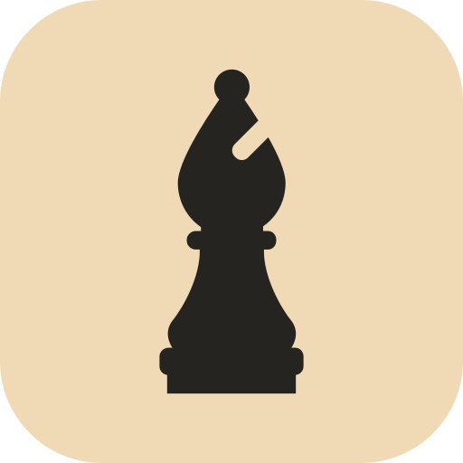

Which move is better?
Real positions, two candidate moves, instant feedback. Difficulty adapts to hold you near 80% accuracy.
chess-pretraining.brendanlong.com
Pieces: cburnett by Colin M.L. Burnett, CC BY-SA